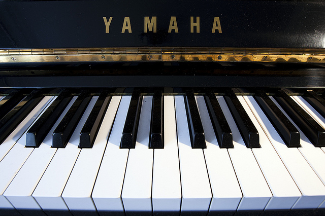

GESLAAGDE PIANO UITVOERING
< Terug >Zaterdag 11 juni verzorgden pianoleerlingen van Judith van den Dool-Baars 2 piano uitvoeringen in de Open Hof.
De Schilderijententoonstelling met kunstwerken van de leerlingen vormden een mooi geheel met de te spelen muziek.
Later op de middag was Samenspel het thema.
Vierhandig, piano en zang en Duco speelde en zong de Pianoman.
Piano, mondharmonica en zang, dat alles door 1 persoon.
Het waren zeer geslaagde uitvoeringen, waar de luisteraars ook enthousiast waren en de spelers bedankten met een luid applaus.